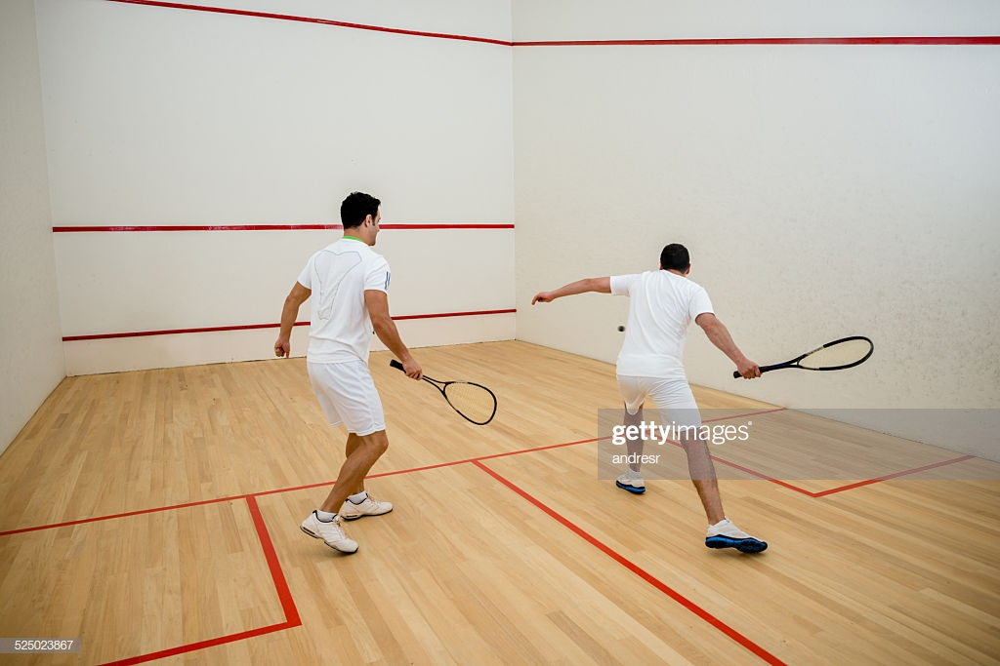

Hello I'm Aayush!
I am a Second year BSc (Hons) Economics and Management Student at King's College London learning HTML and CSS.
Here's a brief of my hobbies and interests
Apart from my academics I'm extremely passionate about a bunch of things. These include discussing behavioural economics, debating, playing squash and programming. I've elaborated on a few on these below.
Squash
Out of the range of sports I play, my favuorite continues to be Squash. Playing for almost 6 years now, I played at the state level in India winning several tournments. In London I represent and play for my university- Kings College London's Squash team.
Economics
My favourite topic of coversation at anytime during the day is finanical and economic affaris of global markets. After spending eight weeks at the LSE learning about Behavioural economics, it too has become a subject of keen interest for me.
My passion for economics has allowed my to participate and win several debates and MUN's as well as manage a new society at my university- Kings global markets.
Programming
I also have a keen interest in data analytics and machine learning and how these two topics are probably going to control the financial and stock market industry in the next few years. Back in India, I undertook a six-month at NIIT learning C++ and Java (P.S.- That is when I realised the world of programming is not meant for me!) In addition to that, I am now learning HTML and CSS by LeWagon.